回忆 2022#
听过老一辈讲述 1966-1976 的故事，但故事总没有亲身经历更刻骨铭心。
2022 是 Gen Z 心中的烙印，它不该被遗忘，将是我们讲述给后人的故事。
以下所有内容摘录自 中国数字时代 China Digital Times ，已经将有极端政治倾向的内容过滤。
【年终专题】润、摆烂、非必要不XX……2022年度网络流行语
润、摆烂、最后一代、不做伥鬼、可惜不是你……中国数字时代整理了2022年年度网络流行语。在筛选过程中，我们综合考虑了相关词语的流行程度、公共属性和它们的反讽/抵抗色彩。
从今年的年度流行词中可以感受到，2022年对于大部分中国人来说相当不易。这一年，“润学”成为了一门显学，许多人见面不再是问“吃了吗？”，取而代之的是“润了吗？”、“考虑润吗？”，面对严苛的防疫政策和“一键三连”的最高领袖，移民成为了一个从中国富裕阶层到工薪阶层都在思考的选项。
而相比于去年还略带浪漫主义色彩的“躺平”，今年的消极抵抗方式“摆烂”则更为直接，当然，现实也更加残酷，严苛的防疫政策之下，中国经济持续下行，大量人口失业，连被普遍视为“上岸”首选的互联网大厂和政府公务员也难逃裁员和减薪的命运。
面对肆无忌惮的公权力，“我们是最后一代”和“我们不做伥鬼”成为年轻一代抵抗者的心声，“最后一代”让自己没有了可以被公权力威胁的“软肋”，“不做伥鬼”则让恐惧和愤怒化为行动，成为一个勇敢的人。
荒诞仍旧是中国的日常，一首梁静茹17年前的情歌《可惜不是你》，今年屡次成为禁歌，原因是人们总在一些政要名人去世的时候第一个想到，怎么不是“他”？现象级带货主播李佳琦，因为展示了一个坦克造型的冰淇淋而消失三个多月，间接让不少年轻人了解了“六四”，更发展出了一个“李佳琦悖论”：“一个人如果想要不辱华，他就要对所有辱华的点了如指掌，那么，ta就已经辱华了。”
在即将与2022年告别之际，我们一起回顾这十二个网络流行词。
润#
“润”的汉语拼音是 Run，而 Run 在英文中又有 “run”（跑路）的意思，所以“润”在中文语境下几乎等同于移民，但尤其指因不满政治因素又无力改变的情况下而选择的移民。
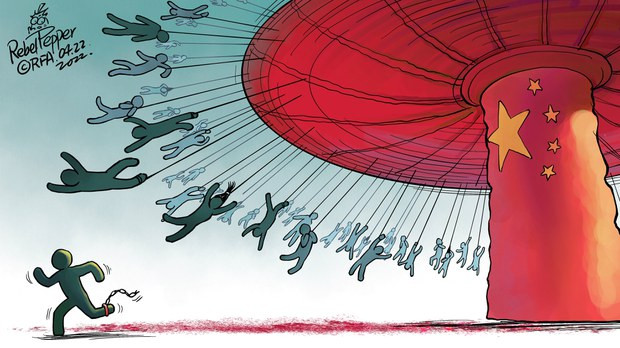
从2020年疫情初期开始，中国严格的防疫政策已经执行了将近三年的时间。这三年中，核酸检测、封控、静默管理、扫码等成为了常态，许多中国人都对这种生活感到了厌倦。而在今年年初，传染性极强但毒性较弱的奥密克戎毒株传入中国后，严格的清零政策更是造成了严重的防疫次生灾害；此外，习近平连任、中国经济持续下行、房地产业爆雷事件频发、大厂冻薪裁员等事件，都让人们普遍对中国未来的预期感到悲观。
在这个大背景下，越来越多人都在思考“润”这个问题，“润”的方法五花八门，有人通过申请学校、在当地找工作，也有人通过投资，或者申请长期逗留签证，甚至有人选择偷渡；“润”去的地方也不单包括美国、欧洲、澳大利亚、加拿大这样的发达国家，甚至泰国、马来西亚等国家也成为了移民目的地。
在“非必要不出境”政策已经实施快三年的中国，人们却比以往任何时候都渴望长期离开。
摆烂#
“摆烂”一词来源于 NBA 联赛，英文是 put rotten，指一些球队通过故意输球的方式让排名尽量靠后，目的是为了在第二年的夏季联赛能有更好的顺位，英文本意是有一定策略性地输，较类似于“田忌赛马”中的比赛策略。
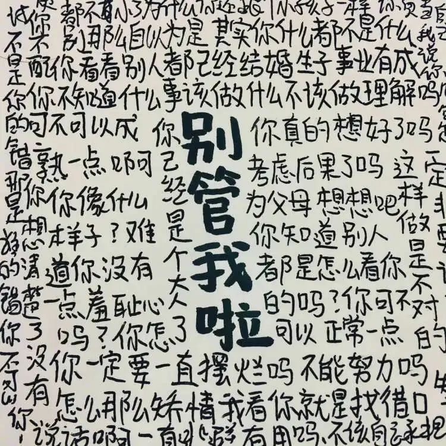
但在中文语境中，这个词的涵义有所变化，更类似于“破罐子破摔”，指当事情已经无法向好的方向发展，于是就干脆不再采取措施加以控制，而是任由其往坏的方向继续发展下去。
“摆烂”在2022年被网民的使用频率甚至超过了2021年兴起的热词“躺平”，某种程度这也反映出了疫情三年人们心态的变化。
最后一代#
“最后一代”出自上海封城中流传的一段视频，视频中，一个穿着防护服的警察威胁一位不愿意集中隔离的居民：“如果你不执行市政府的命令，就要对你进行处罚，进行处罚以后，要影响你的三代！”，而这位居民则立即反击：“这是我们最后一代，谢谢。”
这段视频中“最后一代”的表述迅速引发了共情，人们纷纷在社交媒体转发这段视频并重复这个词，而当局也对此进行了严格的审查。
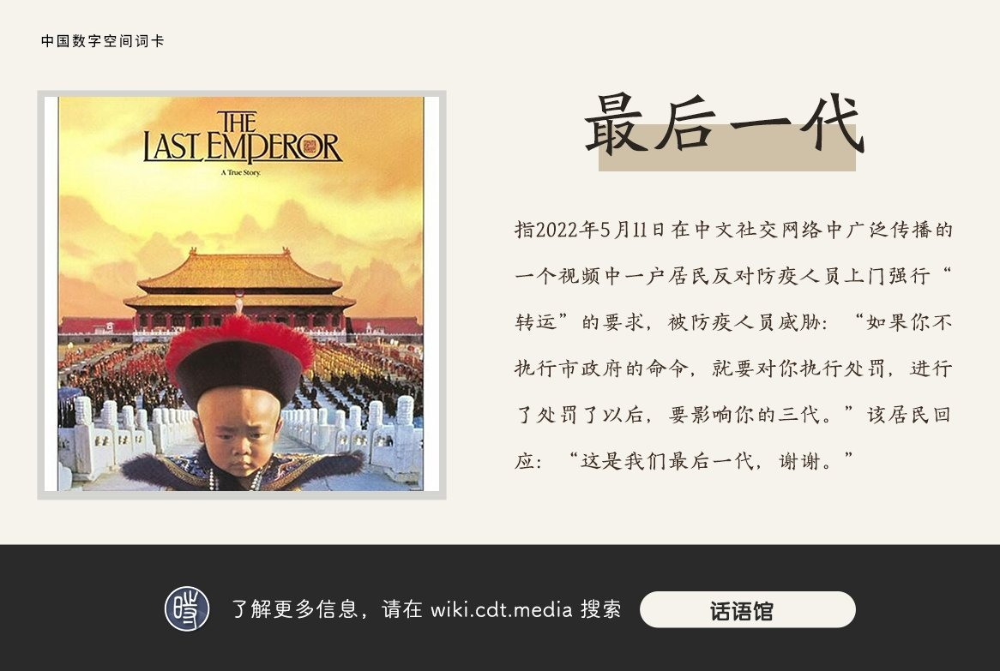
在执行清零政策的过程中，公权力威胁公民的事屡见不鲜。11月底，北京天通苑南街道第二居委会的工作人员，就在开会时讨论如何整肃不听话的辖区居民，其中一句“他的软肋其实是他儿子”令人印象深刻。“我们是最后一代”正是一个公民对于这种肆无忌惮的公权力一种最为悲壮而又无奈的回应。
偷着乐#

“偷着乐”或“偷乐”是一种借助中共官方话术来表达不满的讽刺语。其来源于中国外交部发言人赵立坚在2021年12月例行记者会上的发言:“你们能够在抗击疫情期间，生活在中国，你们就偷着乐吧。”
赵立坚也因此被网民嘲讽为“赵偷乐”。2022年上海封城期间，网民以“偷着乐”反讽上海民众遭受所遭受的防疫次生灾难，并且以“偷乐”、“爱乐之城”、“Call me by your name”、“早C晚A”、“围美救赵”等话语讽刺当局在疫情期间进行的反美宣传，而“偷着乐”一词和相关变体在各大社交媒体平台遭到审查。
二舅/二舅精神#
“二舅”和“二舅精神”源于 Bilibili 用户“衣戈猜想”在今年7月底发布的视频《回村三天，二舅治好了我的精神内耗》，视频中的“二舅”命途多舛，年少时因被打错针而落下残疾，但后来自学木匠和维修技术，成为了村里“第二快乐的人”。作者称赞二舅“庄敬自强”，“把一手烂牌通过努力，过成了自己满意的样子。”
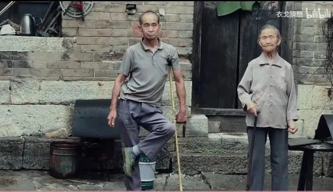
然而，这段视频在几天内引发了巨大争议。有网民称赞视频是现实版的影片《活着》，中国官媒也入场加持，将它定义为“正能量”，并对作者进行了专访。不过，也有不少网民指出视频中的所述与事实不符，更有网民批评“把苦难当正义来宣扬，把悲惨当坚强来布道，这是一种恶毒。”，指责这是一种对苦难的消费。
在这场舆论风波之后，“二舅”和“二舅精神”成为了苦难美学的最新代名词。
非必要不XX#
“非必要不出门/区/市/境”、“非必要不聚集”、“非必要不堂食”等当局在执行防疫政策中常见的口号，当然，它们也不仅仅是口号，而是实实在在可以限制公民人身自由的手段。
层层加码之下，“非必要不XX”的更是演化出了各种版本：“非必要不出校”将学校变成了监狱，被封控到疯的大学生只能在操场爬行表达抗议；“非必要不返乡”将回家过年变成了犯罪，“先隔离再拘留”，有恃无恐的官员董鸿创造出了“恶意返乡”这个极尽冷血与荒诞的词汇。
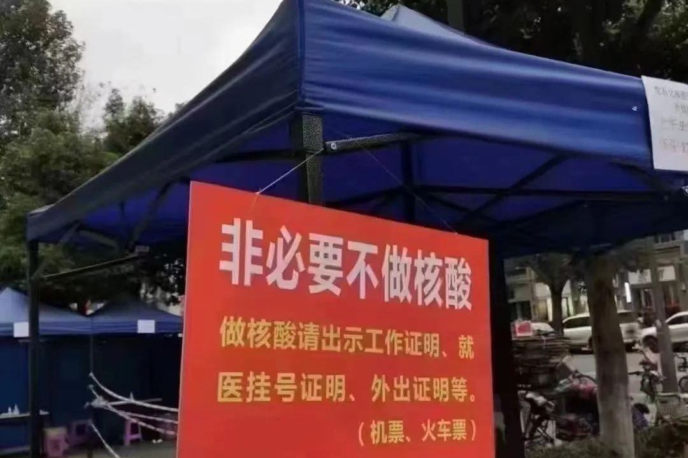
令人啼笑皆非的是，在12月“新十条”实施之后，“非必要不XX”也调转了方向，多地政府倡导“非必要不做核酸”，领导人一个转念，昨日之“必须要”变成了今日之“非必要”。
可惜不是你#
《可惜不是你》是马来西亚歌手梁静茹的一首情歌，收录在她2005年的音乐专辑《丝路》中，歌词表达的是失去爱人后的惋惜之情，本身并没有政治意涵。早在2012年，有“中国防火墙之父”称号的方滨兴在微博发帖悼念一名计算机教授去世，结果大量网民在评论区整齐划一地转发这首歌名来表达对他的诅咒，自此，《可惜不是你》开始与死亡诅咒联系在了一起。
近年随着人们对于习近平执政的不满加剧，《可惜不是你》和“翠”（翠字由“习”和“卒”组成）、“信女愿终身茹素”（电视剧《甄嬛传》中诅咒雍正去世的梗）、“减一秒”（与膜蛤文化中的 +1s 对应，暗指给习近平的寿命 -1s）一样，成为不少网民在名人，尤其是政要离世时常常转发的歌曲，“你”即指代习近平。
2022年有不少世界级的政要离世，包括日本前首相安倍晋三、英国女王伊丽莎白二世、前中共领导人江泽民等，而《可惜不是你》每次都成为不少网民转发的“祈翠金曲”，而包括网易云音乐、QQ 音乐等在内的中国音乐网站也都在相应时段禁止了这首歌的转发。
李佳琦悖论#
“李佳琦悖论”的涵义是：一个人如果想要完全不触碰到政治禁区，那么他就必须了解所有的政治禁区。
事情缘起于中国知名带货主播李佳琦在6月3日在淘宝平台直播销售时，向观众推销了一款坦克造型的冰淇淋。而坦克则是1989年6月4日天安门大屠杀的象征之一，在6月4日前夕展示坦克造型的冰淇淋，无疑触碰到了当局的敏感神经，李佳琦随后停播了三个多月，直到9月20日才再次复出。
外界普遍认为，生于1992年的李佳琦和他的年轻团队，可能在事前并不了解这一段历史。而事后在网上流传的一段视频显示，他们展示的坦克造型，可能是在玩一个“厌女梗”——以坦克比喻体型肥胖的女性，而当晚和李佳琦一起直播的恰恰是一位这样的女性。
事后，有网友总结了“李佳琦悖论”：“一个岁月静好党如果想完全不触碰到政治禁区，他就必须了解所有的政治禁区。这样，一个人如果不辱华，说明他对所有辱华的点都了如指掌，那么，ta就已经辱华了。”
不做伥鬼#
“伥鬼”指的是被老虎吃掉而变成老虎的仆役的鬼魂，品行卑劣，常引诱人使其被老虎吃掉。而“不做伥鬼”出自知名播客节目《反派影评》主播波米在“开局的终局”系列节目第三章，在这期节目中，他从导演陈可辛到韩国成立“泛亚洲制片公司”说起，探讨了“润学”和我们每个人的中在大环境急速恶化中承担的责任，在节目最后，他说道：“润出去的，希望你们落地生根；留下来的，咱们不做伥鬼。”

“开局的终局”系列节目发布于10月底，上线不久后就被全网封杀，《反派影评》的在小鹅通开设的付费节目店铺也被关闭，但这一系列节目却通过不同的渠道在中国流传甚广。在11月底开始蔓延全球各地的反封控抗议潮中，“不做伥鬼”也成为人们经常转发的一个口号。
软肋#
“软肋”即其字面意思，这个词之所以再次流行，是源于11月底网上广为流传的一段视频，视频中几位接街道工作人员在讨论如何对付抗拒防疫措施的居民，他们提到：“哪天XX的找个黑地儿拘他3天”，“就要影响你的儿子”，“他儿子就是他的软肋”，“对呀你就是失信人，你儿子以后就没有未来”，“看哪个帽子扣他合适”。视频中字幕标注日期为11月20日，地点是北京市昌平区天通苑南街道第二居委会内。
该视频引起了网民的极大愤怒，并被称为“伥鬼开会”，“软肋视频”、“天通苑万湖会议”，该视频随后被全网删除。
躺匪#
“躺匪”是“清零政策”的支持者对支持共存政策、放开政策支持者的污名化称呼，意即“支持躺平政策的匪类”。
在11月底到12月初一系列反封控示威潮之后，中国当局出乎意料地在12月对之前坚持的严格防疫政策进行了180度的大调整，中国国务院12月7日公布放宽新冠防疫措施“新十条”，内容包括不再对跨地区流动人员查验核酸检测阴性证明和健康码、不再开展落地检、不得采取各种形式的临时封控等等，随后“通信大数据行程卡”（行程码）也于13日宣布下线。
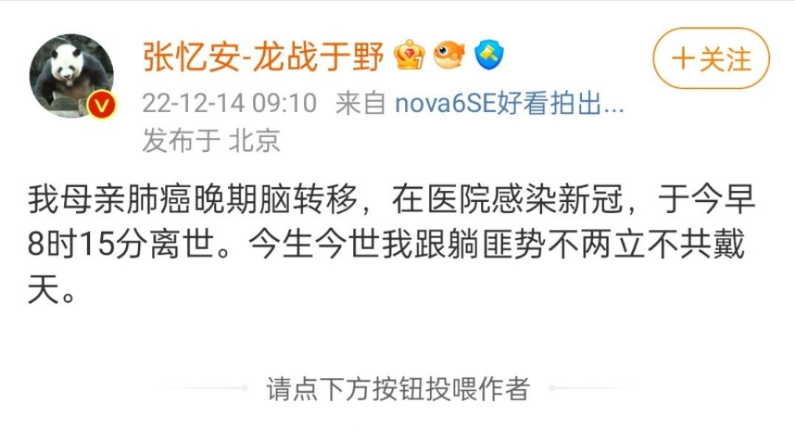
“新十条”实施之后，“动态清零”已经在实际上寿终正寝，中国各地随即出现了大规模的感染，退烧药也在多地售罄。不少“清零派”将这些责任归咎于“躺匪”，北京作家张忆安肺癌晚期的母亲因为在医院感染了新冠而去世，他在微博写道：“今生今世我跟躺匪势不两立不共戴天。”但时评人长平就指出，在防疫措施上真正“躺平”的是中国政府，“抗疫三年来，第一，不仅没有激励制药行业研发出高效的疫苗，而且还不允许进口被广泛证明有效性较高的西方mRNA疫苗；第二，没有提升医疗系统，而是把医院一关了之，并且强制推广未经科学验证的中药；第三，没有对遭受疫情影响的个人和中小企业进行大规模的经济补贴。西方社会正是在做了这三方面的功课之后，社会才逐步恢复了正常。”
【年终专题】被删除被屏蔽的，都是历史的亲历者……2022年度404文章
2022年1月1日-12月20日，中国数字时代【404文库】项目统计到594篇遭到404的文章、帖子或视频（文章消失的原因绝大多数是遭遇了内容审查，少部分可能是作者迫于压力的自删），并将它们全部存档在了我们的网站上（截至发稿时项目总收录数1206篇），打开这些内容的原始链接往往会提示“此内容因违规无法查看（微信公众号）”、“该微博/用户不存在（微博）”、“呃…你想访问的页面不存在（豆瓣）”、“404网页跑丢了（网易）”、“404你似乎来到了没有知识存在的荒原（知乎）”、“啊叻？视频不见了？（B站）”……不同平台提示不尽相同，都是这些图文存在过、但已消失的证明。中国的庞大审查机器每天都会删除不可计数的“违规内容”，中国数字时代【404文库】人工筛出的文章所能呈现的仅仅是其中极少部分，但我们仍可以从这份名单中窥探到有关中国言论审查的某些动向。
与2021年相比，中国数字时代在2022年搜集到的404文章数量（594篇）约为上一年（312篇）的两倍，其中大多数都与中国的防疫政策有关，约270篇。这显示中国政府在今年内动用了极大的审查力量来应对那些呼吁改变或放弃严苛清零政策的声音。此外，年内有大量的404文章与突发的国内/国际新闻事件有关，如丰县铁链女事件、俄罗斯入侵乌克兰、上海封城短片《四月之声》、B站大火视频“二舅”、苏州和服女孩事件、贵州转运大巴事故等，这也显示中国政府在密切关注着各种网络热点的出现、变化，并频繁进行审查介入以打乱舆论的集结，防止它们朝着不可控的方向转变。但无论如何，404文章的不断累积证明对审查的反抗总是在发生，虽然有的或许还没有发出就已消失，但抵抗的声音一直在努力寻找着破绽、并试图在下一次实现成功的突围……【404文库】记录下了被审查拦下的“404尸体”堆积的过程，这构成了整个真实反抗历史的重要部分。正如 @荡秋千的妇女2号 在《大雪时节，回忆三年》一文中所说“在‘全剧终’的时刻，我们不是退场的演员，我们都是历史的亲历者。”
在即将与2022年告别之际，我们一起回顾这594篇404文章中颇有代表性的10篇：
默存格物｜江雪：长安十日#
账号名称：@默存格物｜作者：江雪｜平台：微信公众号｜删文时间：2022年1月8日
2021年12月23日，西安市因新冠确诊病例激增（以德尔塔变种为主）而宣布紧急封城，当地1300万居民继而被限制外出近一个月，当局原计划在短时间内实现“全社会清零”目标并为此制定了时间表，但因未能做好足够的配套保障措施，封城不久便出现了严重的物资供给问题，许多西安市民反映“买菜难”、“吃饭难”，在忍饥挨饿中跨年。与此同时，当地因封禁过度而社会停摆，许多民生问题变得难以解决，人道灾难频发……居住在西安的独立媒体人江雪写下了一篇长文《长安十日》，记录了自己于西安封城期间的诸多见闻，如人们抢购物资、以物易物、邻里自救等。这篇文章很快就引起了网络关注，并在各大平台热转，甚至被一些网民誉为西安版方方日记。几天后，这篇文章因遭到举报而被删除，仅几小时后，又重新上架、死而复生，出现了短暂的“抽风”，最终还是被屏蔽，访问提示“此内容因违规无法查看”。江雪在2022年10月的一期播客节目中提到了写下这篇文字的初衷与感想—— 我真的就是出于本能把它写了，并认为是很正常的一件事情，它就是一个生活记录而已。但这篇文字提供给了很多人一个树洞，去留下自己心中想法，这让我很感动，也觉得自己做的事情是有意义的。
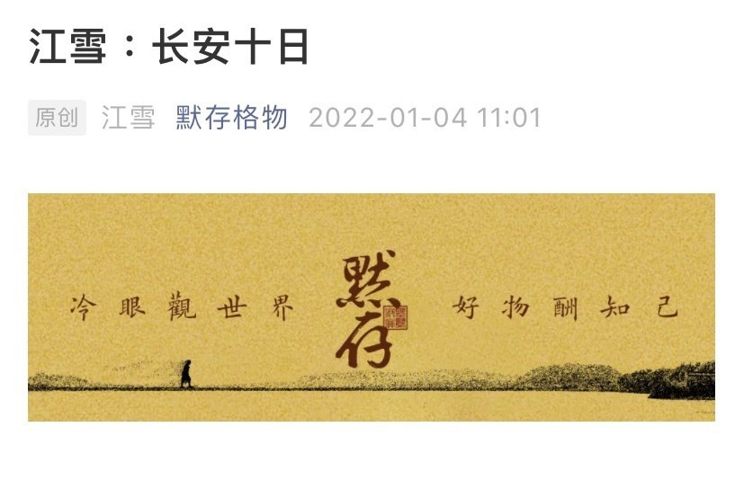
寻光计划 Storiesofwomen｜三八妇女节公益海报#
账号名称：@寻光计划 Storiesofwomen｜平台：多平台｜删文时间：2022年3月8日
2022年3月，“徐州丰县铁链女事件”已发酵了两个多月，然而舆论却还是始终迈过不去“那道坎”，此前江苏省官方发布的第五份最终通报仅像是“串起了前四份，然后写总结”，既没有给民众一个满意的调查结论，也没有给民众一个信服的处罚结果，通报一出官方便要将“事件告一段落”强行翻篇，这更引起了网民的强烈不满，认为有关铁链女的很多追问还远未结束，这条铁链明明还把中国拴在原地，“锁还等着钥匙，问题还等着答案”。当然，铁链女事件所激起的震荡在网络审查部门的层层压制之下能延续多月，本身已可以说是一场奇迹。在此背景之下，2022年的这个三八妇女节和往年相比大为不同，发声的个体间彼此联接，以铁链女为主旨完成了题材广泛的内容创作（如海报、横幅、图像、声音），甚至还有网民将妇女节改名为“丰八节”，以表达对制造无数女性悲剧的无形枷锁的反抗，但这些创作均在三八节当天遭到了不同程度的审查。以女性播客“寻光计划（Storiesofwomen）”为例，她们收录了几十幅网民创作的三八妇女节公益海报，并将其打包为百度网盘进行传播，但网盘链接遭到了屏蔽，伴有提示“此链接分享内容可能因为涉及侵权、色情、反动、低俗等信息，无法访问！”，而这篇整合了各种海报设计的文章也在多个平台遭到删除。做了相似海报整理工作的还有电报频道 @简中赛博坟场 ，而这些内容在墙内均遭到了审查，在妇女节这一天它们甚至不允许女性发出属于自己的声音。
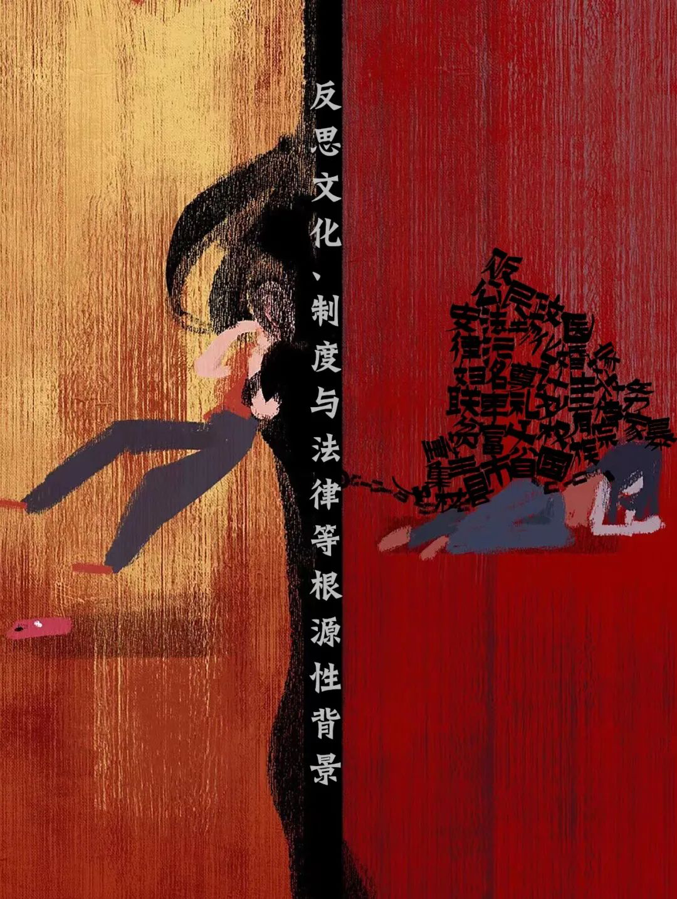
柿油｜上海逝者#
账号名称：@柿油｜作者：王吉陆｜平台：微信公众号｜删文时间：2022年4月13日
2022年3月底，中国最大城市上海因疫情感染达到高峰而宣布封城，官方称之为“大上海保卫战”，之后该特大城市被迫实施了长达两个多月的一刀切封控，导致了各种无药缺粮、物资匮乏、就医困难、扑杀宠物的层层乱象。4月中旬，一篇记录了上海封城期间大量非正常死亡案例的文章《上海逝者》在网上流传，很快便遭到全网封杀。这篇文章列举了许多“非直接死于新冠”但却“因新冠此生灾害而死”的逝者，其中包括上海东方医院护士周盛妮（因为哮喘病发作失救）、因没有出门证无法及时就医的老人陈伟、甚至还有经济学家郎咸平98岁高龄的母亲……这篇文章总共收录了十多名逝者的生前遭遇，Ta们在生前是否得到了有效、必要的治疗，是否可以归因于防疫强制措施，成为了一个无解之问。该文章的评论区更加令人触目惊心，许多网友纷纷跟贴述说身边人的悲惨遭遇，在那些没有媒体聚焦的地方还有着无数人不明不白的消逝人，还有各种荒唐、悲苦、魔幻无时无刻不在上演。在这篇热门文章遭到删除之后，网络上又出现了一个名为“上海疫情逝者名单”的网友互助项目，该项目总共不完全统计到两百一十多名在上海封城期间因此生灾害而死的民众，其中有很多碎片式的信息已难以追溯到非常具体的个人，但它仍像一座无言纪念碑矗立在那里，书写着疫情时代凄惨的非官方记忆。
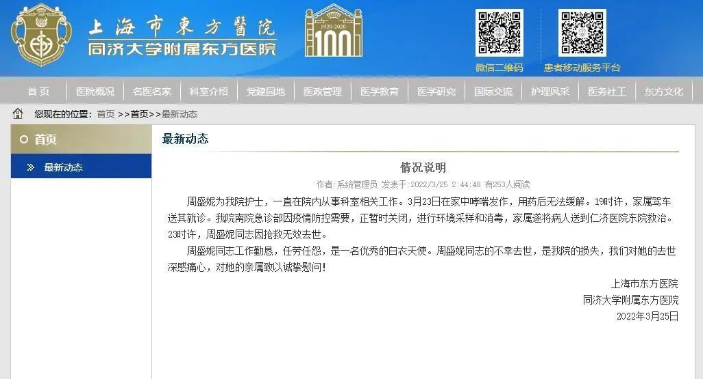
在项脊轩｜人民的艺术：记录33个版本#
账号名称：@在项脊轩｜平台：微信公众号｜删文时间：2022年4月22日
2022年4月22日，微信公众号“永远的草莓园”发布了一个名为《四月之声》的视频，该片整合了20多个独立事件的音频，配以无人机拍摄的俯瞰上海市区的画面，真实记录下了封城期间的上海声音，全片基调温和没有太多指控或煽情成分，视频发布后得到了现象级的广泛传播，但即刻遭到了审查部门的删除。之后，网民们开始用各种有想象力的方式传播《四月之声》的变体版本以对抗审查，例如，该文内就总结了至少33个《四月之声》的图片变体版，这些内容揭示出民众对上海封控期间言论审查的强烈愤怒与反抗，其中有一些设计比较直白，仅仅是嵌入了特殊效果，如血红版、绿色城市版、核心价值观版…..而有一些则相当隐晦而不失力量，需要读者代入联想去体会其中的高级黑，如马赛克版、可以表达自己想法和感受的权利版、缝嘴巴版……但无论是哪一种变体，基本都没能躲过被审查的命运。同一天，中国数字时代【真理部指令】还发布了一则来自“北京网信”部门的通知，其中提到要举一反三的清理《四月之声》的各种变种图片，足见官方才是这个“越封越转”的反审查事件的幕后推手。或许，只有《四月之声》中的那些声音本就不是完整的，要加上那些持续转载它而被抹杀的声音，墙内/外因它泛起回响的声音，才共同构成了当下属于这个时代的“四月之声”。
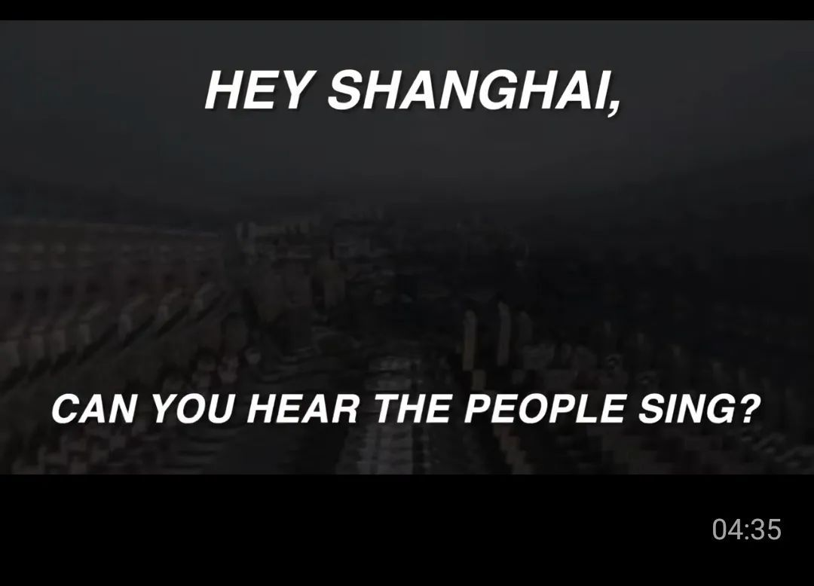
星球商业评论｜犯我者虽远必“朱”：河南多名维权储户被红码#
账号名称：@星球商业评论｜作者：杨乃悟｜平台：微信公众号｜删文时间：2022年6月13日
2022年6月，河南多家村镇银行连续暴雷，由于线上取款途径遭到冻结，越来越多的异地储户尝试前往河南当地取款、信访，其中一些人尽管来自低风险地区，但一旦入豫后原本正常的健康码从绿码变为了红码，同样的情况出现在当地一些烂尾楼维权业主身上，这显示出河南当地正滥用防疫大数据手段进行随意赋码，首度将健康码维稳工具化，使其沦为了新时代的”数字良民证“。星球商业评论是最早关注并揭露维权储户被赋红码的自媒体之一，在这起事件发生之后，河南官方仅对多名官员记过、撤职处分，无人因此受到刑事追责，这种自罚三杯式处理引发了公众的强烈不满。早在健康码出现之时就有人预言，认为它必然会被不受监督的权力滥用，而储户被赋红码事件也的确证明了“权力任性”的胡作非为可以有多么简单，这一事件也极大程度打击了政府公信力以及人们对健康码的信心。2022年9月，一篇由人民日报旗下“国家治理周刊”的报告（于2020年月发布）再引争议，因报告中提到“超九成受访者希望健康码在疫情后继续使用”，结果这个号称代表民意的报告遭到了全网怒骂，网民斥健康码为“电子镣铐、良民证、监控码……”最后官方迫于强大的舆论压力将原文删除。健康码或许在早年取得了一些民众的支持，但“维权储户被红码”事件成为了一个重大的转折点，自此之后，人们的防疫信心严重流失，心态也发生了巨变，有越来越多的民众担心健康码系统会导致公民权利受到限制及隐私遭到侵犯，并明确反对这在特殊时期推行的特殊管理工具在未来走向常态化。
安邦咨询｜中国到了调整疫情防控政策的时候#
账号名称：@安邦咨询｜平台：官方网站｜删文时间：2022年8月29日
2022年8月底，四川省会城市成都刚熬过酷暑高温限电，又开始传出将实施多日封城的消息，民间一片惶恐，纷纷参与到了疯狂的抢购囤货之中……值此时刻，创建于1993年的独立跨国智库安邦咨询发表了一篇报告，认为“中国到了调整疫情防控政策的时候”，报告提到随着新冠病毒的不断变异，新的奥密克戎毒株已呈现出高传染性、低重症率、死亡率极低的特点，这一特点导致中国若仍沿用两年前的严格封控措施会付出极高的社会经济成本，而过去一段时间内中国经济也开始面临失速风险，报告最终建议中国应科学调整疫情防控政策，以恢复经济为重，在常态化防控的时期逐步与世界接轨。在安邦咨询呼吁改变清零政策之后，其报告原文很快从官网上下线，疑似遭了有关部门的施压，这也反映出在“防疫要算政治账”这个基本前提之下，常识与科学并没有得到基本的尊重，各种专业意见频频遭到抹杀。在过去的一年中，中国有很多次关于疫情转向的争论，上海封城之前也被认为是最合适的政策转向时机之一，早在今年3月，就有网民撰文建议转变防疫路线，在防疫下半场走向有准备、有规范的共存，然而这类意见却遭到封杀“清零”。最终，基本的事实之争、科学之争却被官方宣传机器出于政治的需要上纲上线为“理念之争”、“制度之争”、“文明之争”，习近平力主的“动态清零”政策在极权机器的全力开动下尽显其统治方式的野蛮和愚昧，在社会和经济面上都让中国民众付出了惨重的代价，并在2022年12月初上演了彻底的烂尾，完全的失败。
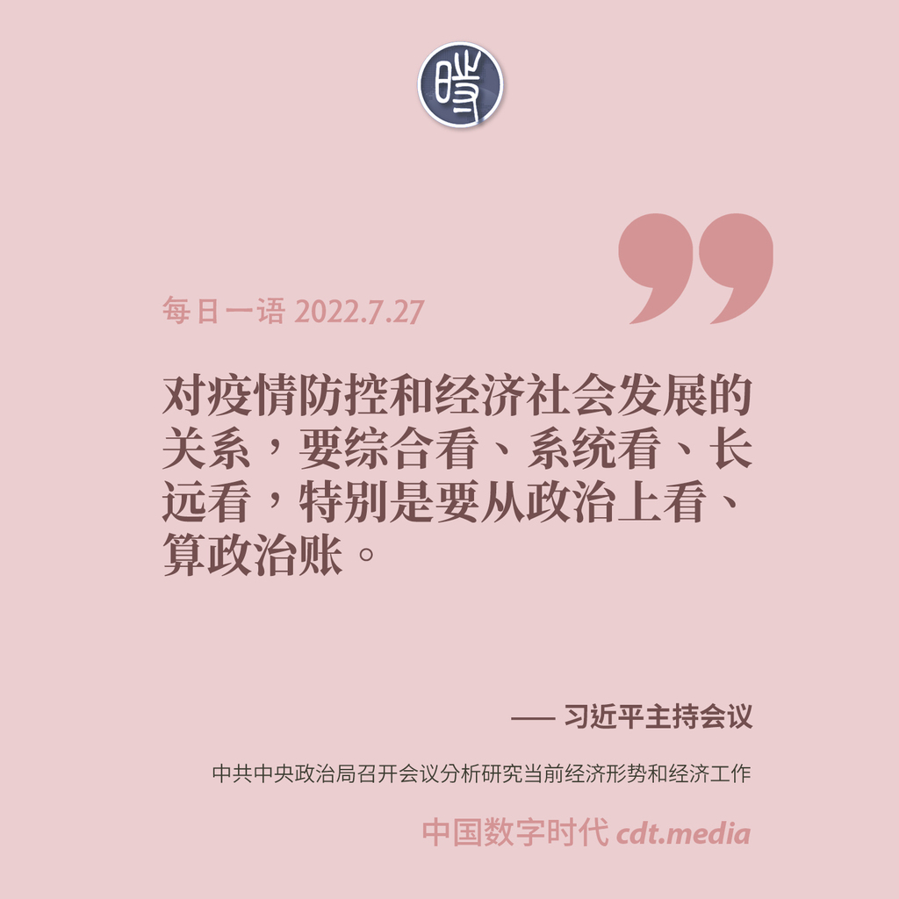
折叠青年｜你凭什么认为你不会在那辆凌晨的大巴上？#
账号名称：@折叠青年｜作者：杳酱｜平台：微信公众号｜删文时间：2022年9月18日
2022年9月18日，贵州一辆凌晨转运新冠隔离人员的大巴车发生事故，造成27人身亡，20人受伤。这一重大事故成为了年内伤亡最惨重的防疫此生灾难，彻底点燃了民众的怒火，有网民将这天称做“新国耻日”。当这辆开往隔离集中营的大巴车毁人亡之后，次日贵阳官方宣布“连续三天社会面阳性感染者清零”，而这个所谓的清零成就正是用对27个家庭的“残酷清零”所实现的。灾难发生后，面对前所未有的舆论海啸，网络审查部门也在努力实现评论、意见清零，有大量谈及此事的文章遭到了删除，而这篇《你凭什么认为你不会在那辆凌晨的大巴上？》是所有被删除的文章中最能激起读者共鸣与转发的一篇，文章标题直切要害，即中国变态清零的代价已经深刻影响到了每一个人，人人都是这场闹剧的潜在受害者，每个人都可能在这辆可怕、黑暗的大巴车上，却没有拒绝搭乘的权利。同时这个标题还把人们引向了一个更深刻的更悲惨的隐喻，我们生下来就在那辆无处可逃的大巴上，如同一种原罪、一种诅咒，且常被疯狂的大巴车司机所绑架，驶向那坠落的黑夜。总之，贵州大巴的悲剧虽看似是单一事件，但却凝聚了当今中国各种可悲的政治现实，在凌晨失去生命的27个乘客，也是所有中国人命运的一丝缩影。正如一位网友所言“我不仅在贵州的大巴上，在徐州丰县的铁链里，在拒绝性骚扰后被群殴的烧烤店里，在省吃俭用还贷款却最终烂尾的楼房下，最后在当前无法查看的微博中……”
长安课堂｜十问#
账号名称：@长安课堂｜作者：云梦公子｜平台：微信公众号｜删文时间：2022年11月22日
2022年11月22日，一篇名为《十问》的文章在微信公众号“长安课堂”上发出，文章对卫生主管机构——卫健委提出了十个问题，直指中国的疫情防控政策，质疑中国政府防疫不力。文章发布后不久便被网民转成了十万+，足见其引发了何等广泛的共鸣，但最终这篇文章还是遭到了全网删除，作者账号也遭到屏蔽，微信提示“此帐号已被屏蔽, 内容无法查看”。目前，在中国结束清零之后再度回看这篇文章，其中的几个问题依然掷地有声，值得继续追问，例如“对于基层防疫的层层加码，卫健委处理了几个人？”、“我们的新冠防控政策决策依据究竟是什么？是数据，是模型, 还是推测？”、“我们不去对标和自己国情差不多的印度，不去学习尼日利亚，整天统计美国的数字，这样对我们防疫有什么实际意义？”…..讽刺的是，当初在这篇微信文章《十问》的评论区，有一位网友提前留下了“十一问”—— “为什么要删这篇文章”，成功预言了这篇文章的消失。一篇态度相当谦和、没有任何激烈情绪、通篇都是常识性内容的文字，甚至未有表露出明显的态度分歧，即便这样，它还是连同账号一起消失了，这也证明了中国政府在防疫政策层面对于不同意见的压制已经到了何种程度，哪怕一丝对清零的不满也会被视作对权威的重大挑战，《十问》这类文章的出现及消失，其实暗含着一种信号即在中国有关“清零政策”的公共言论空间已彻底消失，而这也为几天后席卷全国的“白纸运动”埋下了重要的伏笔。
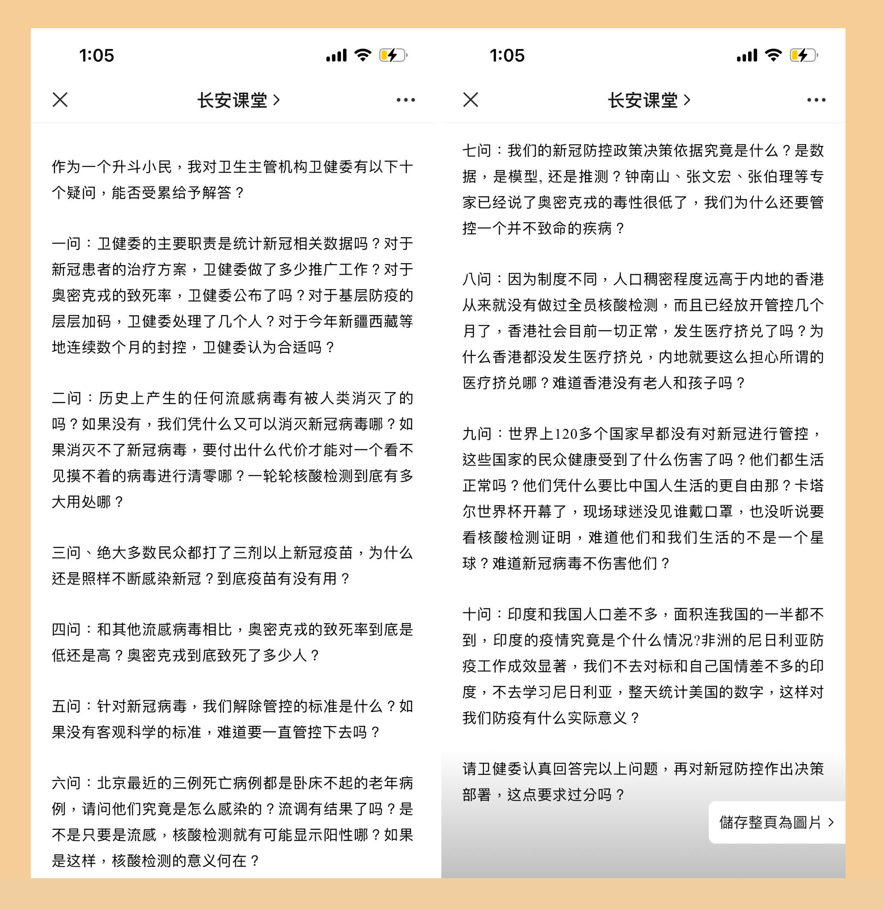
好吃的林君君｜乌鲁木齐中路2022.11.26#
账号名称：@好吃的林君君｜作者：好吃的林君君｜平台：微信公众号｜删文时间：2022年11月26日
2022年11月24日，就在《十问》这篇文章发布的两天之后，乌鲁木齐市天山区吉祥苑小区发生了一起严重的火灾，事故造成10人死亡、9人受伤，有许多网民质疑当局对于小区的严厉封控阻碍了救援，并对此表示愤怒和不满。而这一事件也引发了多个省市民众与数十所大学学生的群聚抗议。其中，上海市民于26日晚自发来到当地一条与乌鲁木齐同名的“乌鲁木齐中路”发起悼念，而这篇图片报道便记录了当时上海市民是怎样平和的献上鲜花、点起蜡烛、表达哀思。但在几小时后，长期以来积攒在民众心中对清零政策的不满被点燃，上海市民终于在乌鲁木齐中路上喊出了最激烈的抗议口号——“共产党下台”、“习近平下台”，场面震撼人心。这也是中国“动态清零”近三年来，首次有民众集体喊出直指中共及最高领导人的政治口号。这样足以载入历史的场景就是真是的发生了，发生在乌鲁木齐中路，而此时它距八九六四33年，距李文亮去世近3年，距上海封城近8个月，距北京四通桥的横幅抗议以及习近平的成功连任仅1个多月。抗议发生之后，“乌鲁木齐中路”这个民主运动圣地自然成为了高级别网络敏感词，这也导致这篇《乌鲁木齐中路2022.11.26》遭到删除，成为中国数字时代唯一收集到的一篇404现场报道，报道相当意外的以记录民众送花悼念的方式，提前记录下了2022年末一个重大的抗议现场，在这里，人民哀伤、愤怒，而愤怒的人民不再恐惧。或许，网络审查者们自己都没有料到，白纸革命的发生，恰恰是过去数年间无数次的网络审查所带来的一种结果，正如网友@麦烧同学 所言，“本来很难形成共识的群体，是你们用404让大家找到共识……” 正因为一切早已删无可删，才让一张没有任何内容的A4白纸就足以构成反抗的经典表达，因为它们删过什么，上面就有什么。它们惧怕什么，上面就有什么。
连清川｜关于这个冬天，我有无数无解的问题#
账号名称：@连清川/清川书房｜作者：连清川｜平台：微博/微信公众号/头条号｜删文时间：2022年12月26日
2022年12月26日，媒体人连清川在其多个个人账号上发表了一篇文章，对中共当局防疫政策一夜之间的急转发出质疑。该文发布之后，作者的微信公众号“清川书房”被永封，公号小号、头条号被删文。该文认为，“所谓‘放开’是一个非常具有欺骗性的词语，它本不应当成为政策的一种形容。更加准确的，是防疫政策，采用何种防疫政策的问题。清零从来不应该成为一种政策，封控从来不应该成为一种手段，而放开更加从来不应该成为一种选择。”而对于中国当下的躺平，作者则评价道“当下的policy，是一个放任放弃与放纵的政策。它严格上来说，连个policy都不算，是摆烂。”这种现状其实也指向了一个问题，即过去三年中国政府没有为与病毒的最终共存做足够的准备，许多的证据显示“疫苗被穿透，ICU依然匮乏，退烧药买不到，农村看不见”、“三年，在新冠病毒面前，我们竟然依然是一个裸体的孩子”。即便近期面对着众多民众感染与死亡的情况，中国政府对于疫苗进口依然是态度消极、抵触，拒绝mRNA国外疫苗的进口，坚持国产疫苗自信，作者质问“（疫苗进口后）许多当下紧张的医疗压力，都会得到巨大的减轻，为什么不？我们在死守的是什么？难道不是人命关天，难道不是人民至上吗？”三年了，我们终于选择了群体免疫的最终路径，但在整个坚持清零不动摇的过程之中，不但没有消灭病毒，却清零了社会。权力日益失控，社会日益凋敝，民生日益困窘。而这，就是封控所付出的整体代价。
【年终专题】从“我的职责”到“我们的职责”……2022年度敏感词
2022年对于中国庞大的审查机器而言，跟每一年一样，依旧在24小时不舍昼夜地无情碾压网民的声音。但对普通网民而言，这一年我们却经历了比之前更多的审查大事件，在徐州铁链女、《四月之声》、“最后一代”、四通桥抗议、乌鲁木齐火灾、白纸抗议等等事件里，或因审查策略制定者的犹豫困惑，或因网民人人参与导致审查机器不堪重负，被官方视为“有害内容”的声音越来越频繁地浮出水面。每一次我们认定“今年最重大的审查行动”之后，都会很快被下一次所刷新。
在2022年即将结束时，这一年大部分审查事件的导火索——动态清零政策被当局取消，我们不仅要面对被延迟了三年的疫情所带来的困苦，还要面对官方对此前“清零叙事”的180度倒转的改写。在今年中国数字时代第三篇年终专题《年度敏感词》中，我们将回顾2022年里的审查事件，以此对审查系统反复修改和操控记忆的攻势做出回应。
长安十日#
敏感词：长安十日。
2021年12月23日，西安市因新冠疫情确诊病例激增而宣布紧急封城。1月4日，前媒体人江雪发布了一篇名为《长安十日》的文章记述西安封城中的乱象和普通人所遭遇的苦难，被誉为是西安版的“
丰县铁链女#
敏感词：丰县铁链女，八孩母亲，铁链 涂鸦，乌衣，我能抱起120斤 等。
从2022年1月8日开始，丰县铁链女事件和由此所引发关于大规模人口贩运和女权主义的讨论持续高涨。当局先后共发布了5次通告，进行了自相矛盾的自我辩护，也不断地调整审查标准。2月23日的第五次通告来自江苏省政府调查组，但与之前不同的是，新华社、人民日报、央视新闻三大央媒携众多官媒进行了转发，意味着对该事件进行“定调”。当晚，各平台均发起了审查行动，所有与官方叙述不符和质疑调查结果的内容遭到删除，并对此前的讨论进行排查。
目前该事件审查标准仍未见调整。

俄乌战争与大翻译运动#
敏感词：乌克兰美女，大翻译运动 等。
2月24日，俄罗斯以“非军事化、去纳粹化”为战争借口入侵乌克兰，俄乌冲突升级为全面战争。因中国坚持“中俄关系上不封顶”的宣传，中国爱国网民立即与俄罗斯总统普京同仇敌忾，对乌克兰展开仇恨言论攻势。其中最丑恶的“收留乌克兰美女”相关言论，被一些网民翻译并传播，引起了国际关注和争议。由此，翻译墙内仇恨言论演变为“大翻译运动”，而中国当局则为掩饰中俄同盟关系并反制大翻译运动，发起了数论审查行动。
俄乌战争相关审查标准经过数次改变，中国数字时代【真理部】栏目验证并记录了多条相关的宣传指令。
2月22日的一条指令称：“对俄不利、亲西方的不发。”
3月1和3日的指令则要求：“降低俄乌冲突舆情热度”，审查焦点变为：“严管挺俄反乌或挺乌反俄等偏激恶毒言论，以及散布所谓公开性反战宣言等有害信息。”其后又有数条指令要求不得跟进报道残奥会禁止俄罗斯和白俄罗斯参赛一事。
“收留乌克兰美女”系列仇恨言论和“大翻译运动”的敏感度则有倒转的趋势。2月26日，网信办相关账号发文称“收留乌克兰美女”言论是由台湾人反串，中国数字时代测试发现此类言论已被多个平台所屏蔽，“乌克兰美女”、“乌克兰小姐姐”等词无法检索到相关结果，而此前“收复台湾岛，活捉林志玲”等爱国仇女、鼓吹战争犯罪的言论并未遭到过禁止且被官方鼓励。3月开始官媒陆续发布对大翻译运动的“起底”文章，网民被一定程度上允许参与讨论。
但截至目前，“乌克兰美女”相关敏感词已被一定程度上解禁，在微博已可检索到少量异议言论和大量营销内容。而“大翻译运动”的相关讨论在官媒攻势结束后却受到限制，微博全部搜索结果不足170条。
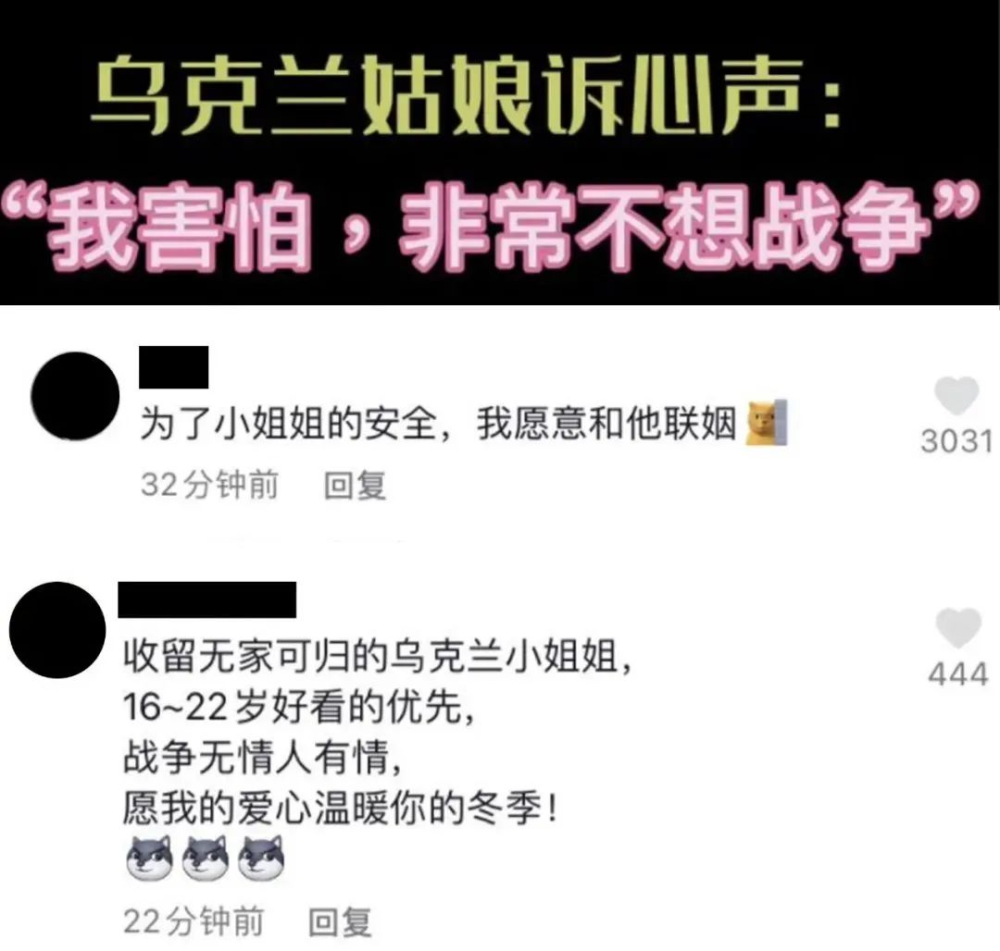
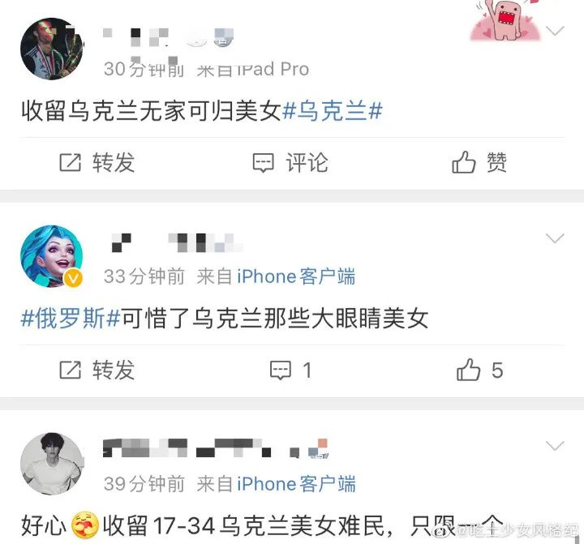
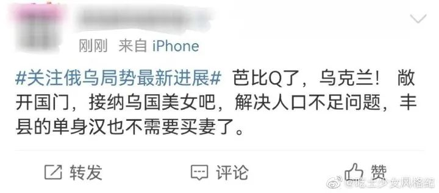
四月之声#
敏感词：四月之声，四月。
2022年4月22日，上海电影人“永远的草莓园”发布视频作品《四月之声》，用4月上旬上海封城期间20多个事件的部分音频，以及无人机拍摄的上海当下俯瞰场景，“做了一个视频当做一种尽量客观真实的纪录，来记住4月的这些声音，希望所有人都能挺过去”。
在该视频获得大量转发后，各平台一致采取了全面封杀行动，但在网民以大量的接力转发、讨论、再创作之下，出现了网民全面跑赢审查的盛况，对抗审查行动至少持续至23日上午。
中国数字时代【真理部】栏目记录的两条指令显示北京和广东网信办均在22日晚下令全面封杀。
目前，“四月之声”仍处于禁搜或准禁搜状态。而微博曾在一段事件内将“四月”一词屏蔽，仅V发布的内容可见，现已解封。

最后一代#
敏感词：最后一代。
2022年5月11日在中文社交网络中广泛传播的一个视频中的对话。视频中一户居民反对防疫人员上门强行“转运”的要求，防疫人员威胁说：“如果你不执行市政府的命令，就要对你执行处罚，进行了处罚了以后，要影响你的三代。”该居民回应：“不好意思，这是我们最后一代，谢谢。”
该视频在社交网络中迅速传播，但视频随即遭各平台删除，并对“最后一代”相关讨论均进行了不同程度的清理和屏蔽。
目前该词的“我们是最后一代”的用法在微博稍有放松，但在抖音等视频平台依然受到严格屏蔽。原视频仍被全网封杀。
你法我笑#
敏感词：你法我笑。
7月，一段2017年央视新闻的节目片段在经过病毒式传播后，被网民发明为一个网络成语“你法我笑”，此后该成语和节目截图meme被禁。
央视新闻2017年1月的一期名为《徐晓洪：建房“征途”》的影片中江西省资溪县鹤城镇泸声村农民徐晓洪因建房手续奔走8年，2016年8月经法院支持终于拿到“两证一书”，但开建后仍被资溪县强拆。影片中资溪国土局执法大队大队长吴建表示：“有些东西是政府主导的，不是说你法律法规怎么弄……一句话说到底，就是权大于法。”而县法制办主任周伟明则说：“你说法制我都觉得有些好笑。”
尽管央视将之视为“普法宣传”并对周伟明等人持批评态度，但网民却对其嘲笑中国法治的态度持某种方式上支持的态度，用周伟明“你说法制我都觉得有些好笑。”的台词截图当做meme使用，一同嘲笑中国法治。
目前，“你法我笑”在微博遭禁搜无结果，网民反映在其他平台使用周伟明截图有遭封号的风险。


白纸运动#
敏感词：白纸，白纸运动，白纸抗议，白纸革命，乌鲁木齐中路，上海。
11月27日凌晨，在上海乌鲁木齐中路的乌鲁木齐火灾悼念活动中，抗议者喊出了“习近平下台”和“共产党下台”等口号。此后连续数日，全国多地出现了反封控抗议活动，许多抗议者手拿一张白纸来表达不满。12月7日，国务院联防联控机制发布“新十条”，宣布放弃清零政策。8日开始，白纸运动逐渐平息。
27日抗议发生后，“白纸”、“乌鲁木齐中路”在多个平台被设为违禁词，设置发布“白纸”相关的图片也会遭到禁言处理。抗议至第2日，与四通桥抗议时禁搜“北京”相似，“上海”一词曾在数天内被微博设为禁搜，但随后解禁。
目前，“白纸”一词被大部分平台解除禁搜，但“白纸运动”、“白纸抗议”、“白纸革命”等词仍为敏感词。有今日头条用户发文询问删帖原因，显示“白纸”仍作为敏感词易遭到误删。
“乌鲁木齐中路”作为抗议地点之一被禁搜，但目前该禁搜已被命中更广的“乌鲁木齐”的禁搜所覆盖。


【年终专题】魔幻抗疫攻防战：2022年度“每日一语”
中国数字时代持续收集网络上的抵抗话语，其中包括网民对热点新闻事件的评论、时政讽刺类段子、时下流行语录或文章中精辟的一段话等。我们尤其关注那些被中国言论审查制度抹杀的“抵抗的声音”，希望从抵抗者的角度，另类地记录和书写历史的一个战场。
2022年，始于西安封城，终于全民染疫，中间的混乱、残忍、荒诞自不用多言。在回顾今年的“每日一语”栏目时，我们也发现，最受读者关注的“每日一语”大多都与中国的防疫政策有关，因此，我们以“魔幻抗疫攻防战”为主题，串起了这9条本年度最受欢迎的“每日一语”。
转推和喜欢次数的统计时间是美西时间2022年12月24日。
在11月底中国多地爆发反封控示威潮之后，12月初中国政府开始了180度的急转弯，公布了包括基本不再查验健康码，不进行大规模核酸检测、不得采取各种形式的临时封控在内的“新十条”，实质上放弃了此前坚持多时，且在今年奥密克戎变种毒柱进入中国后造成巨大次生灾害的“动态清零”政策。
但就在几天之前，面对汹涌民情，新华社才刚发表了“疫情防控三连评”，称要坚定不移贯彻“动态清零”总方针，如果不管“防”、放松“治”，大量有基础性疾病患者、老年人、儿童等人群身体健康将受到严重威胁，并称“越是形势严峻复杂，越要保持战略定力”、“我们的防控政策是经得起历史检验的，我们的防控措施是科学有效的。”
没有人预料到，中国的防疫政策会在完全没有过渡和准备期的情况下发生如此急速的转变，除了中国的防疫专家之外，几乎所有人都对这场突如其来的剧变感到措手不及。在接下来的一两周之内，中国出现了大规模的疫情感染，殡仪馆及火葬场外大排长队，据台湾中央社报道，一份网传中国国家卫健委昨天的会议纪要显示，根据估算，中国20日单日新增感染人数直逼3700万人，呈逐日增加；12月1日至20日累计感染已达2.48亿人，占总人口的17.56%。
面对激增的感染人数，清零政策的支持者没有选择将矛头指向决策者，而是将此前反对清零政策的“共存派”视为罪魁祸首，指责“躺匪”要对现在的形势负责。有匿名网友道出了这中间的讽刺：“看到有人说要严惩那些‘鼓吹’开放的人，非常有趣，他们很明白那些‘决定’开放的人是惹不起的。
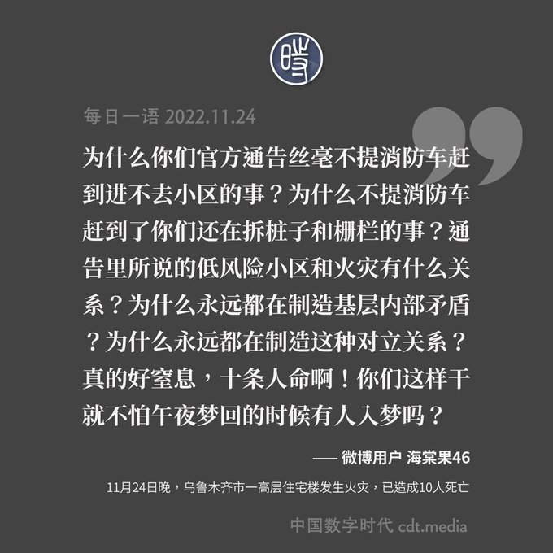
直接引发白纸运动的，是乌鲁木齐大火。11月24日晚，乌鲁木齐市天山区吉祥苑小区发生了一起严重的火灾，事故造成10人死亡、9人受伤。据新华社报道，火灾是在19时49分许发生，22时35分许现场明火才被扑灭。
为什么一起普通的火灾导致将近了3个小时才被扑灭？不少网民从现场流传的视频画面和录音判断，该小区严格的封控设施直接阻碍了救援，而救援时间的延误直接导致了大量人员伤亡。深受封控之苦的中国网民在纷纷在网上表达谴责与抗议，而其后乌鲁木齐官方的新闻发布会，更是给原本就汹涌的民情火上浇油。
官方通报称，吉祥苑小区乃疫情低风险区，居民可下楼活动。但真实情况并非如此，有人晒出吉祥苑小区社区居委会11月21日发出的微信截图。截图显示，“接疾控部门通知，本小区核酸采样出现混管阳性，自现在起实行静默3天管理”，“期间所有居民不得出家门，做到足不出户，所有单元门上封条”，“解封时间会第一时间通知大家。”有愤怒的网民连用六个疑问句质疑官方的通告：“为什么你们官方通告丝毫不提消防车赶到进不去小区的事？为什么不提消防车赶到了你们还在拆桩子和栅栏的事？通告里所说的低风险小区和火灾有什么关系？为什么永远都在制造基层内部矛盾？为什么永远都在制造这种对立关系？真的好窒息，十条人命啊！你们这样干就不怕午夜梦回的时候有人入梦吗？”
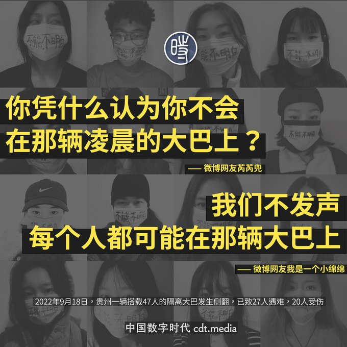
防疫造成的次生灾难远不止乌鲁木齐的悲剧。9月18日凌晨，贵州一辆搭载47人的转运隔离人员的大巴在贵州省黔南州三荔高速（贵阳往荔波方向）上发生侧翻，导致27人死亡，20人受伤。
而就在事发前一天，贵阳市当局才刚刚宣布要“决战决胜社会面清零”，而因为贵阳市已启用的隔离酒店已经难以完全接收需要被隔离人员，所以需要异地运到省内其他市州进行隔离。
事后有网友指出，根据2018年修订通过的《道路旅客运输企业安全管理规范》第三十八条规定，长途客运车辆凌晨2时至5时停止运行或实行接驳运输，所以，这辆隔离大巴会在凌晨2点40分侧翻，明显是由于当局罔顾法规，为追求“社会面清零”而特事特办。
这起大巴侧翻事件引发网民大量关注，再加上它具有极强的隐喻色彩（发生在中共二十大之前不到一个月，一个精神状态未知的司机把车开翻了），许多网民都觉得自己像是这辆车中被转运的乘客。有网民发布微博称：“你凭什么认为你不会再那辆凌晨的大巴上？”，另一位网民则回复：“我们不发声，每个人都可能在那辆大巴上。”
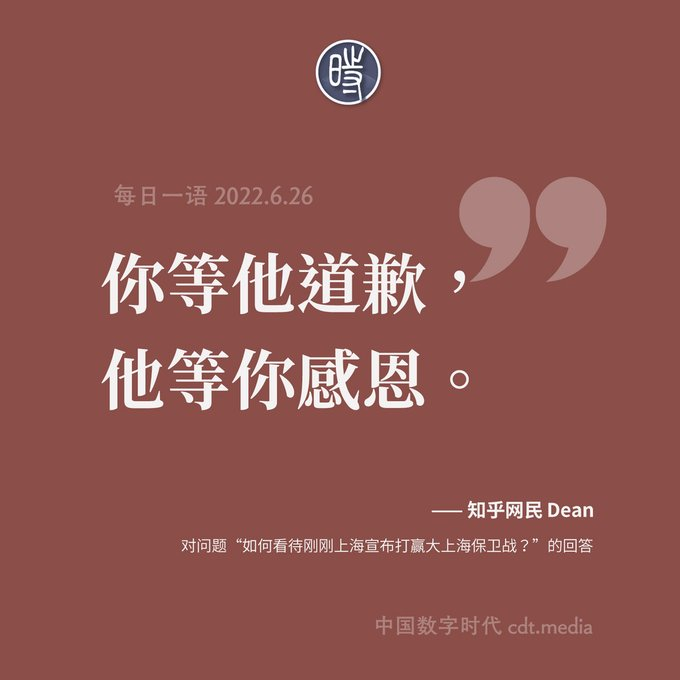
如果真的如12月时的中国防疫专家所说，奥密克戎的毒性极弱、致死性极低，那么我们不禁要问，上海封城的两个多月是为了什么？无数的人道主义灾难又换来了什么？
在这两个多月的时间里，有许多有基础疾病的人因为得不到及时就医而去世、也有人忍受不了无休止的封控而选择自杀，而更多的人在这两个多月的时间里饱受核酸与饥饿的双重折磨……这个中国最发达的城市，在荒唐的政令面前沦为了一座炼狱。
6月1日，上海解封。6月25日，上海市委书记李强就宣布“我们打赢了大上海保卫战”，虽然没有人知道这一切是为了“保卫”什么？但他们永远是“从胜利走向胜利”，普通百姓和官僚集团的认知差距，就像网民创作的段子所说：“你等他道歉，他等你感恩。”
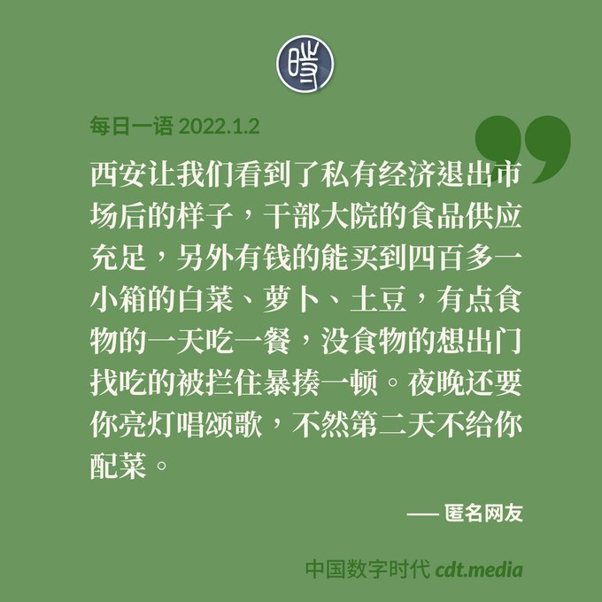
类似的防疫次生灾难不单单在上海出现，在全国各地不同时间都有在上演，中国数字时代“防疫次生灾害”的标签，也记录下了这些事件。
去年年末到今年年初的西安封城就是一例，去年12月23日，西安因确诊病例激增而宣布紧急封城，但由于没有提前准备好相应的配套措施，封城不久后便出现了严重的物资短缺问题，许多西安市民反映“买菜难”、“吃饭难”，需要在饥饿中跨年。一位居民出小区买馒头，却被社区工作人员抢夺手机并被群殴；另一位居民因翻墙出去买东西吃，而被志愿者罚对镜头做检讨。但与此同时，官员等特权阶层却仍可以在封控中享有着充足的食物供给。
有网民创作段子调侃：“西安让我们看到了私有经济退出市场后的样子，干部大院的食品供应充足，另外有钱的能买到四百多一小箱的白菜、萝卜、土豆，有点食物的一天吃一餐，没食物的想出门找吃的被拦住暴揍一顿。夜晚还要你亮灯唱颂歌，不然第二天不给你配菜。”
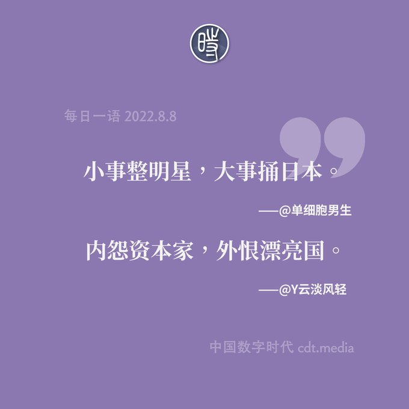
面对频发的防疫次生灾害，宣传机器开足了马力为当局的防疫政策护航。在需要“收”的时候，它们罔顾科学事实，故意模糊原始毒株和奥密克戎变种的区别，不断像民众灌输病毒的危害性和新冠后遗症的影响；在需要“放”的时候，它们又风头一转，大力宣传得新冠和得感冒没什么区别，奥密克戎的毒性极弱、致死率极低，真正做到了习近平所说的“收放自如，进退裕如”。
不仅如此，在人们对防疫政策普遍感到疲惫和愤怒的时候，微博热搜和舆论报道的焦点就总是被一些娱乐新闻或带有民族主义情绪的新闻所占据，人为制造出另一个舆论焦点，用来转移人们的注意力。有网友总结了二十字的“内宣方法论”：“小事整明星，大事捅日本。内怨资本家，外恨漂亮国。”
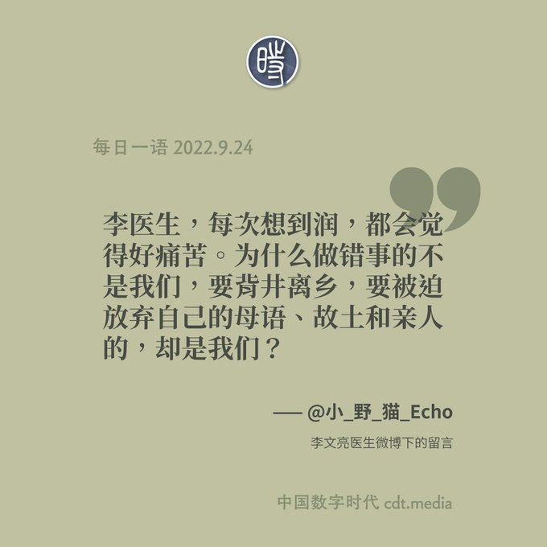
面对防疫政策带来的巨大不确定性和经济的不断下行，不少中国人，尤其是年轻人都在思考“润不润”这个问题，“润”也是入选了中国数字时代的年度网络流行语。
但“润”（Run）这个字本身就带有许多无奈，“逃跑”并不是因为自己主动想要离开，而是看到大环境急速恶化，自己却无力做出改变，为求自保的一种被动的选择。而这一批想要“润”出去的人，有很多并不像以往的移民那样，目的为了追求更多的财富或更好的生活质量，而更多是出于一种对于习近平持续连任下中国前景的悲观，希望自己或自己的下一代活得有作为人起码的尊严，财产也受到基本的保护。因此，“润”的目的地不仅包括美国、欧洲、澳大利亚、加拿大这样的发达国家，而像泰国、马来西亚、希腊、塞浦路斯等国家也成为很多人的选择。
在李文亮医生的微博（中国哭墙）上，一位网民写下了 ta 在面对“润”时的痛苦与无奈：“李医生，每次想到润，都会觉得好痛苦。为什么做错事的不是我们，要背井离乡，要被迫放弃自己的母语、故土和亲人的，却是我们？”
【年终专题】“不要领袖要选票，不做奴才做公民”……2022年度名场面
西安疫情发布会名场面：居家期间出现颈肩疼痛如何缓解？#
1月11日，西安市新冠肺炎疫情防控工作新闻发布会（第53场）上出现魔幻的一幕，当日的发布会记者提问环节共涉及了3个问题，在轮到第三个时，西安广播电视台的记者竟提出了一个奇葩问题：“居家期间，有的市民朋友长时间看电视、刷手机，造成颈肩疼痛，有这样症状的朋友应该注意哪些问题？”这个问题被专家认真回答了11分47秒之久，还从“疼痛表现”、“疼痛原因”、“需要注意哪些问题”三大部分逐一分析，并建议市民注意预防。此时，西安全市1300万人仍被迫处于封控状态，最终整个发布会1/3的时间被投入到这么一个浪费公共资源的无聊问题上，许多网民对于发布会如此演戏作秀而强烈不满，纷纷吐槽“一个敢问，一个敢答！一个敢播！”
感恩防疫人员的正能量舞蹈《听我说谢谢你》流行#
3月，感恩一线防疫人员的舞蹈《听我说谢谢你》集中在微博、微信及短视频平台热转，视频中的主角们配合着同名BGM《听我说谢谢你- 李昕融》，先是向防疫人员鞠躬致谢，再跳起简单的手语舞蹈，以表达对防疫人员辛苦付出的感激。这段正能量舞蹈其实早在去年就有出现，但于2022年3月在社交平台出现病毒式传播，而成为了新的流量密码。虽然有网民强烈批评《听我说谢谢你》类的舞蹈构成了一种打扰和道德绑架，但也未能在短时间里影响它的走热，甚至网上还出现了规模更庞大的“校园版”。在习近平当局出于“算政治账”的考虑，坚定不移实施“动态清零”，全国多地将疫情封控常态化之后，防疫大白与民众的所谓蜜月期很快结束，相反，作为极权体制权力末梢的执行者和承受者，两者在日常出现了相当多的冲突与摩擦。
上海男子面对强制隔离，绝望喊出“这是我们最后一代！”#
5月11日，一段上海防疫人员试图强行拉“密接”市民去隔离的对话视频在中文互联网上热传。视频中的男性市民援引法律称防疫人员无权强拉“密接”人员去隔离，并拒绝被转运。最后，一名身穿印有“警察”字样白色防护服的人员威胁称：“如果你拒绝被转运，将会受到治安处罚。处罚以后，要影响你的三代！”而这位上海男子回复了一句极致悲怆且决绝的话：“这是我们最后一代，谢谢！”在绝望的年轻人眼中，断子绝孙已经不再构成一种诅咒，而是成为了一种义无反顾的“与未来的诀别”——宣称自己在这样的社会生存不会再繁衍任何后代。可以说，这句话是一位年轻人对他所处的时代，所能作出的最为强烈的控诉。
唐山烧烤店打人事件之后，吃烧烤变得“最安全、最尴尬和最搞笑”#
6月13日，在唐山烧烤店打人事件发生之后，河北唐山市宣布开展为期半个月的夏季社会治安整治“雷霆风暴”专项行动，同期国内还有许多城市也展开了所谓的“夏季夜巡行动”，官方集中投入大量安保、警力在夜间摸排安全隐患，展开“头疼医头脚疼医脚”的运动式执法，而烧烤摊自然是警方巡查的重点目标之一。多段网络视频呈现了这些荒诞的夜巡场景，一些吃烧烤的食客甚至被警察全程站岗围观，场面相当尴尬，如同“社会面吃牢饭”。不少网民吐槽在唐山打人事件之后，街头撸个串居然都可以享受总统级安保，这一刻成为了“吃烧烤最安全”同时也是“最尴尬和最搞笑”的时刻。
河南村镇银行维权储户聚集在郑州集体抗议遭到官方暴力镇压#
7月10日，在“河南村镇银行暴雷”事件发生近三个月后，河南当局仍未能解决储户无法取款的问题，众多维权储户相约集结在郑州市河南人民银行门口举行抗议，要求归还存款。有多段网络视频显示，维权储户们在现场与大量政府官员、便衣警察对峙，并打出“没有存款，就没有人权”、“河南银行坑我们全国百万人近300亿存款”、“警察暴力对待储户，要人权法治”等标语。就在几周前，当局为了避免抗议者集会对一些前往郑州的储户采取了“赋红码”的措施，这一举动引发了舆论海啸，成为年内最重大的官方丑闻之一。最终，这场大规模的抗议集会遭到了镇压，当局出动大量便衣警察冲入人群，殴打并抓捕示威储户，这也导致了很多储户受伤。这个暴力且混乱的场面向我们展示了年内一场大规模的维权抗议活动是如何在暴力镇压下结束的。
央视专家称奥密克戎BA.5的致病性减弱，相关视频遭到删除#
7月11日，央视《新闻1+1》栏目播出了一段主持人白岩松就奥密克戎BA.5变异株采访病毒学专家的视频。这名专家（武汉大学基础医学院病毒研究所教授杨占秋）就主持人的提问“如何看待奥密克戎BA.5导致的重症情况减弱”明确回答道“奥密克戎致病能力明显减弱….病例大多为无症状，难以发现…..类似于感冒症状，不会有严重体征”。另外专家还表示“奥密克戎仅仅引发咽喉部或者上呼吸道感染，不会引起肺炎这样一种严重的体征。”讽刺的是，这段视频最终被央视网站下线（中国数字时代【404文库】项目已将这一视频收录）。3天之后，人民日报发表文章《我们的防疫措施是最经济的、效果最好的》称“动态清零是综合社会成本最低的抗疫策略，可持续且必须坚持。”
厦门市集美区对渔货进行核酸抽检，中国核酸检测乱象愈演愈烈#
8月17日，厦门市集美区给渔货进行核酸抽检的报道引发关注，有工作人员从鱼嘴、鱼身提取核酸样本，厦门官方证实了该报道内容属实，有关通知也强调渔民和渔货上岸时，要实行“‘人+物’同检”。当然，这仅是今年中国核酸检测乱象的一个侧面而已。早在2022年1月，河南禹州市火龙镇就有防疫人员为田里的蒜苗做核酸而遭到网民嘲讽。在年内网民搜集到的各种“核酸奇葩行为大赏”中，共享单车、麦子、宠物、家禽、摩托车、卡车、钢材等都未能逃脱大规模常态化核酸检测，而成为了被折腾的对象，毕竟世间万物皆可核酸……9月5日，四川泸定发生严重地震后，甘孜州防疫部门竟要求消防救援人员“先核酸，再救援”，足见过度核酸检测已到何种魔幻程度。12月开始，随着中国疫情政策的转向，核酸检测又突然从民众生活中很快消失。
正能量传菜宣传翻车典型案例：贵阳花果园小区大白接力传菜#
9月9日，因新冠疫情爆发而处于全城静默的贵阳市，其居住人口最为稠密的花果园小区出现了一段“低级红高级黑”的宣传：上百名“大白”以人链接力方式传递蔬菜，一万余袋蔬菜包最终被这种方式卸货完毕。至少四段不同角度拍摄的视频揭露了这一人力传菜行为的荒诞：运送物资的大货车停靠在马路边卸货，却没有直接开到小区门口，大白们站在马路中间努力传菜，画面中拍到三轮摩托、电动摩托、SUV等交通工具，但它们却并未被用于辅助搬运，似乎“浪费人力”是一种刻意。该视频还得到了当地官媒的力推，称赞为“一股不可抗拒的力量”，然而却遭到各地网民怒骂，惨遇翻车。在今年上半年，“人力传菜”的宣传也曾在上海、西安出现过，但“贵州花果园小区大白接力传菜”却是所有正能量传菜宣传中规模最为庞大，行为最不合逻辑的一例。
重庆超人哥怒斥疫情防控政策：“不自由和穷，我们现在全占了”#
11月24日，重庆某小区大门口，一名身背超人背包的男子面对众多市民大声怒斥疫情防控政策，期间金句频出，引得围观民众纷纷叫好。超人哥说“这个世界只有一种病，它叫不自由和穷，我们现在全占了”，并多次与围观群众对话“正常的胡萝卜一斤应该多少钱？”、“你们想不想看世界杯，在广场上热闹地看？”，并多次高喊掷地有声的“不自由，毋宁死”口号。最后，现场有多名警察欲暴力带走超人哥，但遭到围观民众的痛斥，并合力将超人哥救下，让这个仗义直言的画面同时有了一个暖心的结局。或许超人哥自己都没有意识到，他的勇敢之举成为了11月全民接力反抗极端封控的一个重要开端，激起了持久的民间共鸣，仅三天后，那句“不自由，毋宁死”也被乌鲁木齐中路上的上海市民们喊出，成为了白纸运动中一个响亮的口号。
南京传媒学院出现“白纸革命第一人”，白纸上有人性和自由的阳光#
11月26日，南京传媒学院有两名学生手举白纸在校园内抗议，疑表达对当局审查乌鲁木齐大火相关信息以及严格疫情防控政策的不满，随后现场有许多学生自发聚集并组织了一场声势浩大的悼念集会。有消息显示南京传媒学院可能是中国首先出现“白纸抗议”的地方，它也因此成为了中国内外遍地开花的白纸运动策源地。有一段视频显示了其中一名南传学生当时的抗议细节：女生手举着空白A4站在阶梯前，而一位看似是校方人员的男子从其手中夺走了白纸……据称，白纸作为抗议象征原是来自一个前苏联笑话，但在中国因为网络审查的广泛存在而有了更加响亮的内涵——它的上面什么都没写，但也可以代表任何被中共当局因惧怕而压制的内容。在白纸运动席卷全国之后，有网络传言称“白纸革命第一人”的真实身份是南京传媒学院学生李康梦，但该消息未被证实，其个人安危目前仍被深切关注。